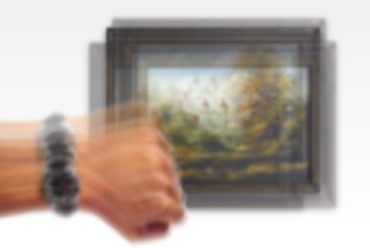

¿Cómo ves?
Miopía
Anomalía o defecto del ojo que produce una visión
borrosa o poco clara de los objetos lejanos;
El ojo miope suele ser más alargado que el ojo
normal y enfoca la imagen por delante de la retina.
El tratamiento adecuado son las lentes oftálmicas
negativas con armazones y/o lentes de contacto.
Hipermetropía
Defecto ocular de refracción que consiste en que los
rayos de luz inciden detrás de la retina.
Imposibilidad de ver con claridad objetos cercanos.
Tratamiento adecuado micas oftálmicas
y/o lentes de contacto.
Astigmatismo
Defecto del ojo que consiste en una curvatura irregular
de la córnealo que provoca que se vean algo deformadas las
imágenes y poco claro el contorno de las cosas.
Tratamiento adecuado micas oftálmicas
y/o lentes de contacto.
Presbicia
Alteración de la visión debida a los cambios del poder
de acomodación del ojo humano producidos por la edad
aproximadamente después de los 45 años de edad.
Dificulta la visión para la lectura.
La presbicia es una evolución natural
Tratamiento lentes positivas en micas progresivas.

Queratocono
Enfermedad degenerativa de la córnea que causa mala
visión de forma progresiva. Durante la evolución la córnea
adopta una forma cónica hacia afuera (ectasia corneal)
irregular debido a la alteración de su estructura interna.
El tratamiento óptico es adaptación de lente de
contacto rígido, hibrido o escleral .